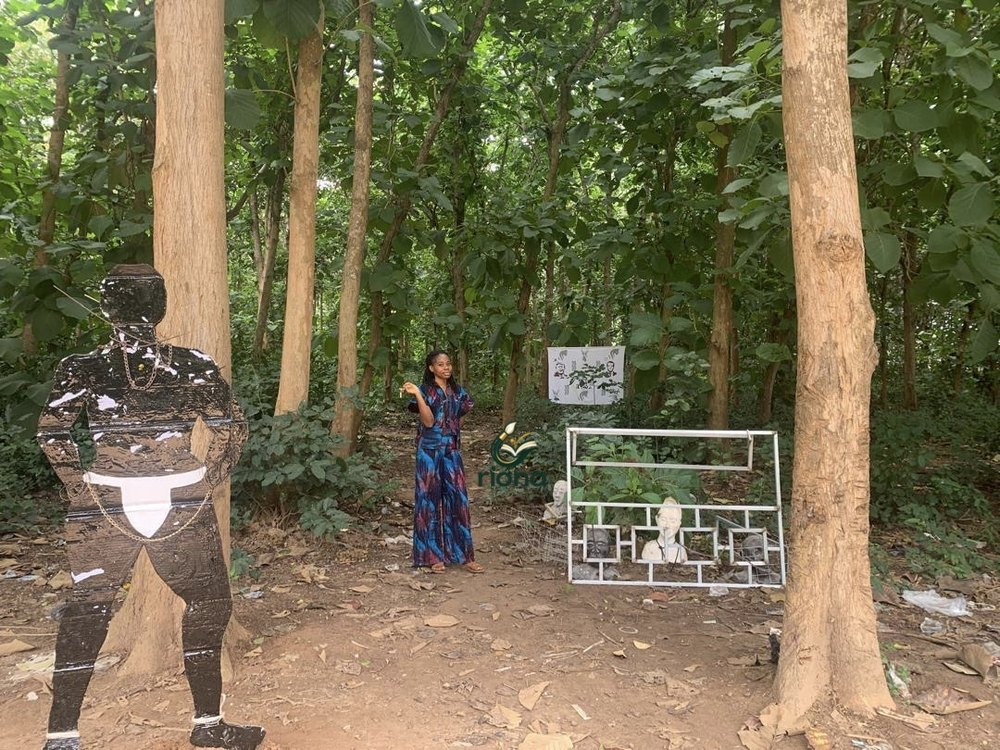

Installation
Slavery—Another Name Enforced
Artist: Rita Alorti
The atmosphere of the slavery of the past. Slavery is being enforced in the 21st century.
Set among the trees, this installation brings the atmosphere of past slavery into the present. A chained figure stands beside a frame of sculpted faces, asking visitors to look closely at how slavery is still being enforced in the 21st century.
The artist's message is that Africans are being kept enslaved through the manipulation of their minds, even as they fight for total independence.